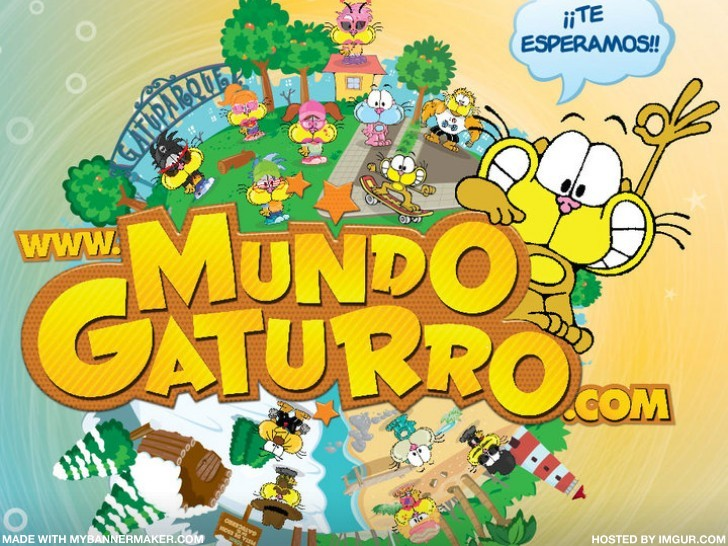

Mundo Gaturro es un juego en línea multijugador para niños basada en el personaje Gaturro. El sitio fue desarrollado en el año 2010 por la empresa argentina QB9 Entertainment, mismo año que se lanzó una adaptación cinematográfica sobre dicho personaje de historietas y animado.
El juego permite tener amigos, chatear, hacer misiones, usar trajes, pasaporte, transportes, usar efectos, decorar la casa del jugador, comprar partes para agrandar la casa, usar un celular donde el jugador puede enterarse de noticias, juegos y mensajes de sus amigos. También se pueden hacer cosas misceláneas más.
Mundo gaturro también tiene una red social, Picapon .También, mientras Picapon estaba en mantenimiento, fue reemplazado por "Mundo Gaturro Mobile", para jugar desde un móvil, aunque solo se podía chatear y caminar en un pequeño espacio verde, poner ropa y pelos que se encuentran de regalo al inicio en Mundo Gaturro y cambiar el sexo y edad del avatar.
Mundo Gaturro empezó como un proyecto de Nik en 2009 pensado como un juego para niños de 4 a 12 años. Actualmente solo se puede usar la versión descargable debido al cierre de Adobe Flash.
Una de las principales polémicas de este juego es la discriminación que existe en él. Hay algunos jugadores, conocidos como "Chetos", que insultan a los niños novatos y los disuaden de jugar.Los "Chetos" suelen tener su casa repleta de objetos, piel de todos los colores que no sean amarillos, efectos, pasaporte, ropa y transportes que se consigan con este, entre otros.
| Ropa | Vehiculos | Objetos Decorativos |
| La ropa que se podia comprar iba desde zapatos y remeras hasta lentes y gorras | Estos eran los objetos mas caros y exclusivos que iban desde caballos a lapices voladores | Estos eran objetos que podias poner en tu casa para decorarla |